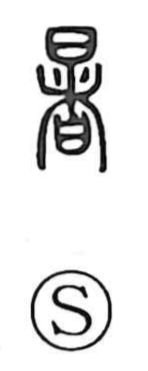

暑

Uncategorized
Kun: atsui | On: sho
heat ・ hot weather ・ sultry
Explanation
Shirakawa reads 暑 as a phono-semantic compound: the upper 日 is the sun, the source of scorching light, while the lower element 者 serves as the sound carrier. In archaic forms, 者 depicts a talismanic tablet set into the earthen wall encircling a village as a protective charm, and here it lends its voice value. With the sun above, the character comes to mean the state of being baked by sunlight—hot, sultry weather. As a phonetic, 庶 (sho), associated with cooking and heat, would suit the reading even better, and because 庶 and 者 were close in sound, early forms could use them in place of each other; but the core sense rests on 日, the heat of the sun.